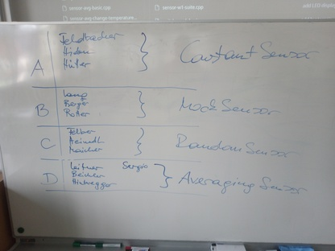

WS2023/24#
2023-10-05 (6 VO)#
OO: Recap#
What we know: Constructor, Methods, Objects,
thisFrom Functions and Methods …
What we have
Sensor-like types
Exercise: ConstantSensor_nopoly (Non-Polymorphic) (sensor-avg.h)
Exercise: MockSensor_nopoly (Non-Polymorphic) (sensor-mock.h)
Exercise: RandomSensor_nopoly (Non-Polymorphic) (sensor-random.h)
Exercise: AveragingSensor_nopoly (Non-Polymorphic) (sensor-avg.h)
Switch-like types
Consumers
Plan 💪#
Polymorphize switches and sensors ⟶ interfaces
Use interfaces in LED display and hysteresis
Show example of a display that outputs sensor values to
stdout(rather than writing the output inline, inside the measurement loop)Project: Data Logger
Define sink
Define source configuration
Lifetime (e.g.
AveragingSensor::add()) ⟶ pointer classes… see what time brings …
OO: Polymorphism#
From Inheritance And Object Oriented Design:
From C++ >= 11:
Git Collaboration (via Github, but not necessarily): Forks And Pull Request#
See Working with Git In Our FH-ECE21 Project, “Forks And Pull Requests”
Tasks, First Round#
2023-11-03 (6 VO)#
Organizational#
Course page modifications (chapters instead of table)
Grading scheme
OO: Design?#
Look over integrated pull requests
ConstantSensorRandomSensorMockSensorAveragingSensorDependencies: does it really need
sensor-mock.h?⟶ UML sketch
⟶ Design patterns (Composite)
What was that all for?
Structure:
SensorinterfaceDesign patterns (outlook)
Many more: Design Patterns With C++
Project#
Hardware Overview#
Linux and OneWire (using DS18B20 Temperature Sensor as Slave) (
class W1Sensorimplements that, in our project)PWM Userspace Interface (using PCA9685) (see Temperature Display: LED Via A PWM Controller)
Tasks#
2023-11-09 (3 VO)#
Project#
Caring about hacking students
2023-11-10 (3 VO)#
Project#
Caring about hacking students
Team meeting
{kind=link}
2023-11-17 (3 VO)#
OO, And Software Development At Large#
-
See SysFS GPIO Switch and (DONE) Boiling Pot (The Beginning) for why.
Single responsibility ⟶
Hysteresisdoes not do sensoring and switching itself; it uses an interfaceOpen/closed ⟶
Hysteresisis not modified when a newSensorimplementation is addedLiskow substitution ⟶
Hysteresisshould be possible to use anySensor. Easily violated!!Interface segregation ⟶
Sensordoes not have a name in it. Data logger would need one, but adds it itself (SensorConfigis aname⟶Sensormapping)Dependency Inversion ⟶
Hysteresisdoes not depend on, say,W1Sensor, but rather onSensor
Project#
Updating A Fork From Upstream#
Look over Working with Git In Our FH-ECE21 Project
Reasons to “sync” a fork
GCC warning: “Structured binding only available for C++17” ⟶
-std=c++17at toplevelCMakeLists.txtContinuous development cycles on fork, repeated pull requests from the same fork
Presentations: where we are, with
2023-11-20 (6 VO)#
Container Templates (std::map)#
Project#
New Tasks: MQTT And CSV Sink Implementations#
MQTT
Data Logger: MQTT Sink (task definition)
Datalogger Pull Request#
See today’s meeting minutes in (DONE) Data Logger
Boiling Pot, Switches#
See today’s meeting minutes in (DONE) Boiling Pot (The Beginning)
Team to continue on
tasks/switch-interface
SysFS GPIO Switch#
See today’s meeting minutes in (DONE) Boiling Pot (The Beginning)
2023-12-07 (6 VO)#
Project#
Structure#
firmware/: what’s supposed to be deployed:data-loggerandboiling-potdemos/: demo and test programstoolcase/: library, structure into subdirectoriesbase/data-logger/boiling-pot/
tests/…
Show dependency graph
Renames#
LEDDisplay->PWMController
2023-12-14 (6 VO)#
Project#
Datalogger#
-
Status: couple of minor tweaks (see “Standup records” in (DONE) Data Logger)
Followup tasks
Boiling Pot#
Peripherals#
2024-01-08 (6 VO)#
Project#
Close task Boiling Pot: Basic Integration
Bonus points for switch
Bonus points for Pi donation
Bring relay board and cooker, and a gapher tape
Bring Data Logger: Integration to an and
Use a real sensor
Coordinate with Data Logger: CSV Sink and Data Logger: MQTT Sink
Integrate those using a composite sink
Display Interface/Infrastructure, and Boiling Pot: Display, And Status Reporting
Status: do we have an interface? If not, make it so!
Integrate into firmware/boiling-pot.cpp ⟶ see test cases mentioned in Boiling Pot: Display, And Status Reporting
2024-01-11 (6 VO)#
Project#
BIG FAT SYSFS-GPIO NOTICE: NO SAFETY
2024-02-02 (Exam)#
Relevant Topics#
SOLID (OO Design)